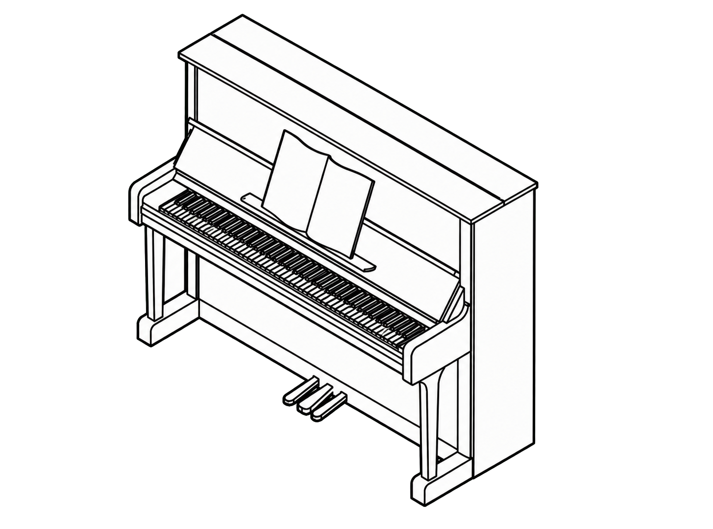

A clearer sound
A tuned piano can make practice and playing a more satisfying experience.

Angus Vardy-WhitePiano Tuning ServiceNorth London · Upright piano specialist
Tuning for upright pianos in North London. Standard tuning £120; pitch raise £190.
Call 07803 30667901 / The difference
Pianos naturally move out of tune as temperature and humidity change. Regular tuning helps maintain a consistent pitch and makes the instrument more enjoyable to play. A piano that has dropped substantially below pitch may need a pitch raise.
02 / The approach
Angus uses a hybrid aural and electronic temperament-tuning approach: a careful balance of listening and measurement, tailored to the individual piano.
The aim is a stable, musical result that lets the character of the instrument come through.
03 / Why tune?
A tuned piano can make practice and playing a more satisfying experience.
Respect for your time and home, with dependable, tidy service.
Skilled, attentive care from a dedicated piano technician.
04 / Questions, answered
Angus is North London based and covers locations including Highgate, Muswell Hill, Crouch End, East Finchley, Finchley, Hampstead, High Barnet, Barnet, Hornsey, Harringay, Alexandra Palace, Bounds Green, Wood Green, Archway, Tufnell Park, Kentish Town, Camden, Tottenham and Stoke Newington. Please get in touch with your postcode to check availability.
Yes.
A pitch raise is for a piano that has fallen substantially below its intended pitch. It involves a larger initial correction before a fine tuning, so it is priced separately at £190.
If you are unsure, share what you know about the piano and when it was last tuned. Angus can help you decide whether a standard tuning or pitch raise is likely to be appropriate.
Call 07803 306679 or use the email address shown below, with your location and a little information about your piano.
05 / Services & prices
01
£120
A focused tuning appointment for a piano that is already reasonably close to pitch.
Arrange a visit →02
£190
For a piano that is substantially below concert pitch and needs a larger correction before fine tuning.
Ask about your piano →Not sure which service applies? Get in touch with a little about your piano and its recent tuning history.
Piano tuning appointments
Emailangusvardywhite [at] gmail [dot] com